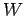
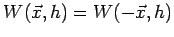
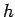
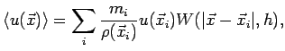
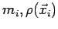
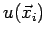

Nächste Seite: Kollisionsdetektion Aufwärts: Smoothed Particle Hydrodynamics Vorherige Seite: Smoothed Particle Hydrodynamics Inhalt
Mit Hilfe dieser Glättungskerne kann nun    an jedem Punkt im Raum als Summe über alle geglätteten Partikel bestimmt werden.
Dieser Wert ist im Allgemeinen nicht exakt, aber Olaf Kessel-Deynet zeigt in [7], dass es schon genügt, zusätzlich zu den Gleichungen 2.5 und 2.6 zu verlangen, dass
an jedem Punkt im Raum als Summe über alle geglätteten Partikel bestimmt werden.
Dieser Wert ist im Allgemeinen nicht exakt, aber Olaf Kessel-Deynet zeigt in [7], dass es schon genügt, zusätzlich zu den Gleichungen 2.5 und 2.6 zu verlangen, dass
 |
wobei
  -ten SPH-Partikel sind.
-ten SPH-Partikel sind.
SPH ist durch die Möglichkeit der freien Platzierung von Partikeln im Simulationsgebiet speziell geeignet, Prozesse, die sich auf einem komplizierten räumlichen Gebiet abspielen, zu simulieren, da die Partikel zum Zweck erhöhter Genauigkeit in relevanten Bereichen lokal dichter und in anderen, die nur geringen oder gar keinen Einfluss auf die Simulation haben, auch gar nicht platziert werden können. Auch ist eine Neuplatzierung dieser Partikel für jeden Zeitschritt meist sinnvoll. So eben auch bei der Simulation von Wasser. In meiner Arbeit transportiere ich die Partikelposition schlicht mit der Geschwindigkeit des Wassers. Andere Ansätze, die dies lediglich als erste Approximation wählen, werden zum Beispiel in [6] verwendet.
In dieser Arbeit wird das Gleichungssystem 2.4 gelöst, indem in einem ersten Durchlauf für jedes Partikel die Dichte  als Summe der geglätteten Dichten aller Partikel bestimmt wird und in einem zweiten Durchlauf die von
als Summe der geglätteten Dichten aller Partikel bestimmt wird und in einem zweiten Durchlauf die von  abhängigen geglätteten Kräfte aufsummiert werden. Da die Glättungslänge klein ist, muss nicht über alle Partikel summiert werden, sondern nur über Partikel in der jeweiligen -Umgebung. Um das zu optimieren, wird eine effiziente Kollisionsdetektion benötigt.
abhängigen geglätteten Kräfte aufsummiert werden. Da die Glättungslänge klein ist, muss nicht über alle Partikel summiert werden, sondern nur über Partikel in der jeweiligen -Umgebung. Um das zu optimieren, wird eine effiziente Kollisionsdetektion benötigt.